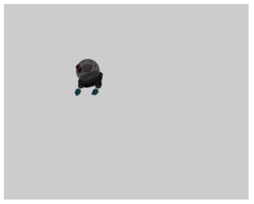

Back to the main tutorial guide page.
In tutorial 1, we looked at creating the basic structure for our game scene. We created a camera object and a game object with a simple renderable. In this tutorial, we look at more advanced renderable types, collision detection and resource management.
To use resources, we request the engine to load files in loadScene(). We can start using them in initialization().
To facilitate the loading of resources, we create constants. By convention, we store resource files in the "assets" directory of our game engine hierarchy. The contstants identify the paths.
[Note: When creating resources for texture maps, the dimensions must be on the order of perfect power of 2.
Examples of image size includes 64x64, 512x20248 or 16x128.]
function MyGameScene() { this.mCamera = null; this.mRenderable = null; this.mGameObject = null; this.kTexture = "assets/minion_portal.png" }; gEngine.Core.inheritPrototype(MyGameScene, Scene);
The code above declares three instance variables that will be used in our scene. We do not allocate RAM yet. We just declare and make sure that they are set to null.
The loadScene() function will queue our texture for loading. The files we identify will load asynchronously. Only after all files have been loaded into RAM, will the engine call our initialization function. We parallel the loading of resources with the cleanup and deallocation of resources in unloadScene().
function loadScene() { gEngine.Textures.loadTexture(this.kTexture); };
function unloadScene() { gEngine.Textures.unloadTexture(this.kTexture); };
The initialization() function is mostly the same as it was in the previous tutorial. Now we create a TextureRenderable instead. This renderable has all of the same functionality as the Renderable but allows us to utilize a bitmap image instead of using a solid color.
MyGameScene.prototype.initialize = function () { this.mCamera = new Camera( vec2.fromValues(50, 40), // position of the camera 100, // width of camera [0, 0, 500, 400] // viewport (orgX, orgY, width, height) ); // set the background color of our view to medium grey this.mCamera.setBackgroundColor([0.8, 0.8, 0.8, 1]); // create a new "texture" renderable object this.mRenderable = new TextureRenderable(this.kTexture); // create a new game object with the new renderable this.mGameObject = new GameObject(this.mRenderable); this.mGameObject.getXform().setSize(16, 16); this.mGameObject.getXform().setPosition(30, 50); };
The GameObject is created just as before, but now, we have a a reference to our new texture-based renderable. Without changing anything else in our code, viewing this in a web browser should give you the following result...

In tutorial 3, we will took at renderables that support textures and game objects that support collision detection.